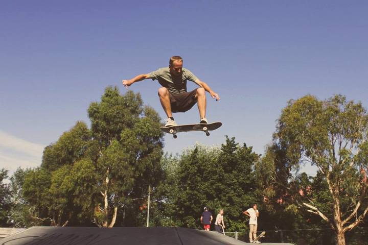
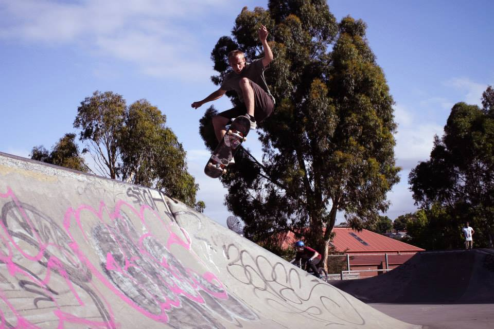
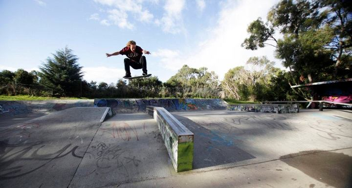
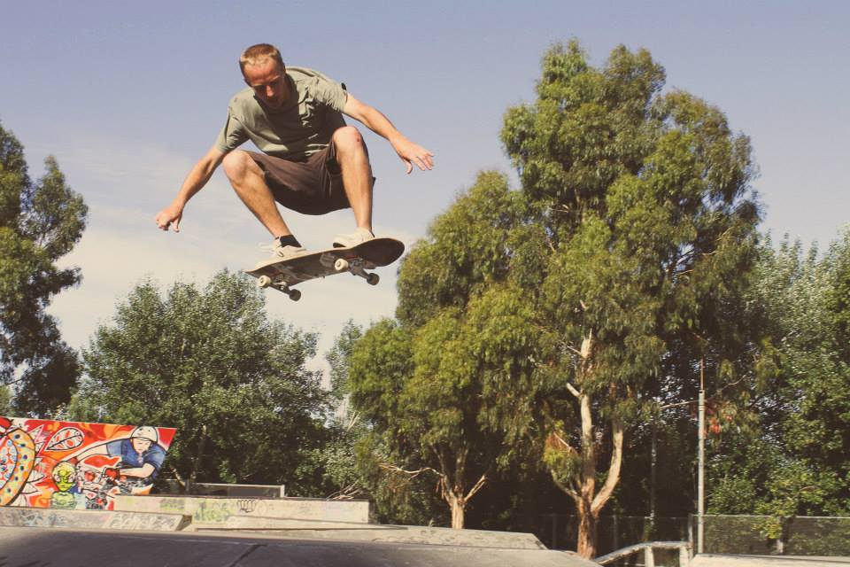
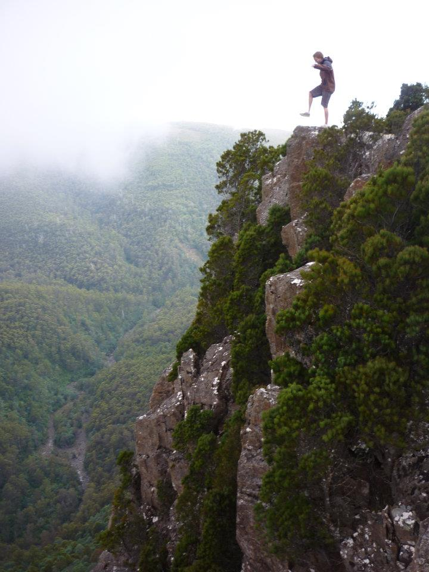
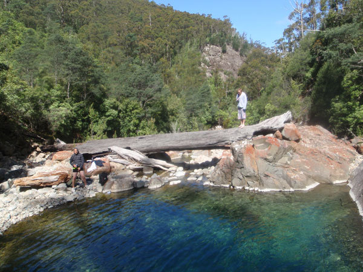
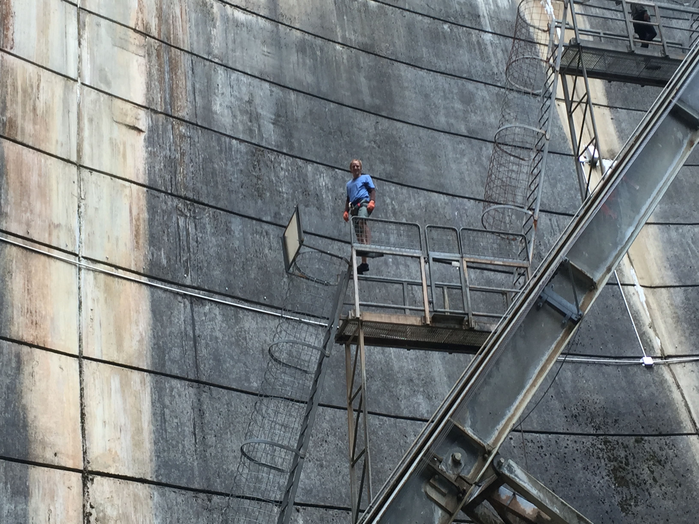

Off screen
Other things I spend time on.
There is more to life than software. I’ve spent years skateboarding, wandering around Tasmania and experimenting with generative art.
Skateboarding
Usually worth the bruises.
I’ve been skating for a long time. I like the combination of repetition, improvisation and the stubborn satisfaction of finally landing something that has not been cooperating.




Outside
Tasmania is difficult to stay indoors in.
Walks, swims, cliffs, dams and the occasional questionable jump. I’m not a particularly formal photographer, but I like keeping a record of where I’ve ended up.




Generative art
Code as a colour experiment.
I’ve used C and C++ with OpenCV to treat images and video as a canvas, transform colour through custom RGB/HSV routines, and assemble the generated frames with FFmpeg.
The part I enjoy is finding a simple mathematical rule that produces a result which feels much more complicated than the rule itself.